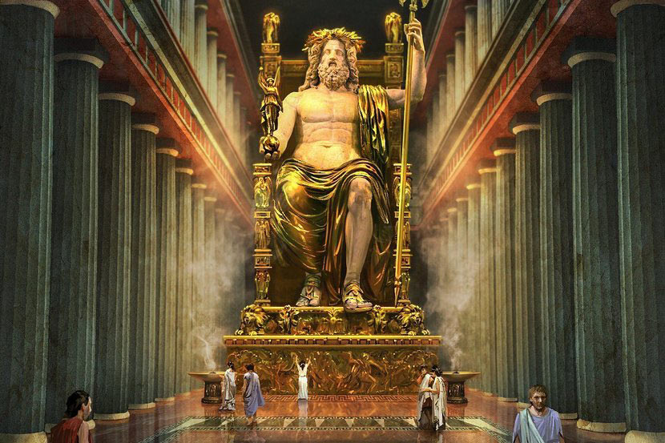

Гигантская статуя Зевса — верховного бога древнегреческого пантеона — была создана знаменитым скульптором Фидием около 435 года до н.э. Статуя размещалась внутри храма Зевса в Олимпии, месте проведения древних Олимпийских игр.
Высота статуи составляла около 12–13 метров. Зевс восседал на троне из кедра, украшенном золотом, слоновой костью, чёрным деревом и драгоценными камнями. В правой руке он держал статуэтку богини победы Ники, а в левой — скипетр с орлом.
Статуя была выполнена в технике хрисоэлефантинной скульптуры: тело бога вырезалось из слоновой кости, а одежды и детали — из листового золота. Такая техника требовала особого ухода: чтобы слоновая кость не трескалась от сухости, в храме поддерживали высокую влажность с помощью оливкового масла.
Статуя была перевезена в Константинополь, где погибла при пожаре в 475 году нашей эры. До наших дней не дошла, но сохранились описания древних авторов и изображения на монетах, позволяющие реконструировать её облик.